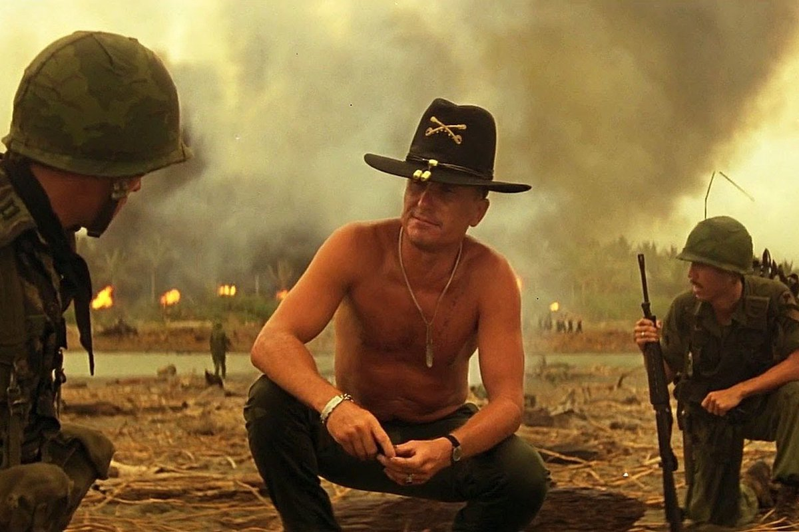

Чувствуешь запах? Это цензура, сынок. Больше ничто в мире не пахнет так.
Я люблю запах цензуры поутру. Однажды мы блокировали один интернет-портал двенадцать часов подряд. И когда всё закончилось, я вышел в интернет. Там уже ничего не было, даже ни одного вонючего зеркала. Но запах! Весь интернет был им пропитан. Это был запах… победы!
Когда-нибудь наша свобода закончится.
Если вы еще не поняли, ваш любимый интернет меняется, и далеко не в лучшую сторону. Всемирная сеть уже давно перестала быть страной чудес, где все бесплатно, а ты можешь стать кем угодно, не боясь привлечения к какой-либо ответственности. Прямо на ваших глазах настаёт новое время. Время искусственных ограничений информационных ресурсов и отсутствия частной жизни. Время запрета выражения своих взглядов, время, когда контроль и учёт выходят на новый уровень. Пресловутый Большой Брат хищно скалится из-под своих густых усов, протягивая свои руки к богатствам и возможностям интернета. И всё, что происходит сейчас — лишь тень нависающих над нами цепких пальцев.
Наслаждайтесь тем, что есть у вас сейчас. Дышите, пока можете дышать.
А ещё отклейте этот кусок изоленты с вашей вебкамеры и поднесите к её объективу документ, удостоверяющий вашу личность, или мы будем вынуждены принять меры.
Увлечения:
♥ Запах напалма по утрам
♥ Вертолёты
♥ Джонни
Не люблю:
♦ Тупых новобранцев
♦ Гуков на деревьях
♦ Джунгли Камбоджи